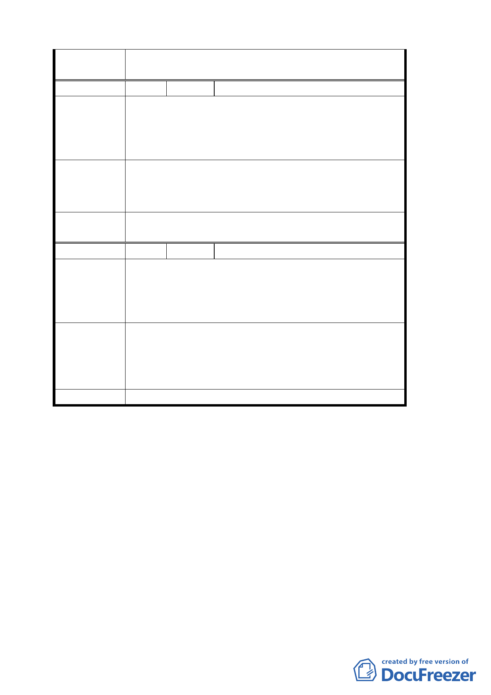

委員會決議
本陳情意見非屬都市計畫變更事宜，仍請依國有財產
法相關規定向國有財產局申請辦理。
編 號 4 陳情人 臺北市大安區龍安里辦公處
1. 古蹟部分漏列楊思標教授宅（臺北市和平東路一段
陳情理由
2.
183 巷 7 弄 6 號）。
青田街 12 巷 5 號已列入古蹟，建議將青田街 12 巷
3 號亦一併納入，以增加古蹟本身之腹地。
1. 本里未列為歷史建築及古蹟之日式房舍，請一併列
建議辦法
入歷史建築物以維護文化資產。
2. 不能因本計畫案而影響現住戶改建的權益。
委員會決議
1.有關列入歷史建築物請文化局依法定程序辦理。
2.現住戶改建權益依本計畫處理。
編 號 5 陳情人 國立臺灣大學
聚落風貌保存專區之使用性質、土地及建築物之使用管
陳
情
理
由
制於細部計畫都市計畫書已有關規範限制，為利爾後歷
史建築保存再利用及符合風貌之彈性規劃，建議都市設
計管制要點有關聚落風貌之彈性規劃。
建議都市設計管制要點有關聚落風貌保存專用區之建
建
議
辦
法
築高度以不超過 5 層樓為原則，其他計畫範圍內之住宅
建築高度不宜超過 6 層樓，以避免古蹟及歷史建築遭遮
掩或形成天井狀態。
委員會決議 仍依公展計畫辦理。
參、
一、因會議時間已晚，經委員同意，討論事項五、六、七移下次委
員會議討論。
二、散會（19 時 30 分）
28